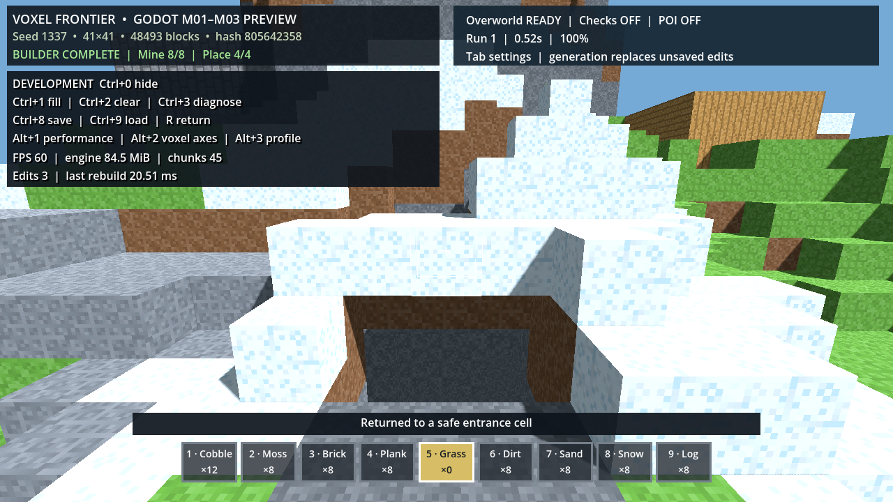

범위와 증거
- 12블록, 9슬롯 핫바, 1인칭 이동·점프·웅크리기
- 조준 채굴·배치·HUD, Builder 8회 채굴/4회 설치, R 복귀
- Builder 53/72, 자세/가장자리 24/25, 입력·표시 런타임 검사
게임 플레이 증거

실제 렌더 Builder challenge 완료 및 안전 입구 복귀 캡처.
제한·다음 게이트
직사각형 하위 API와 CLI 오류 정책 차이가 남았습니다. M01 종료에는 실제 렌더 입력·화면 확인·문서화가 모두 필요합니다.